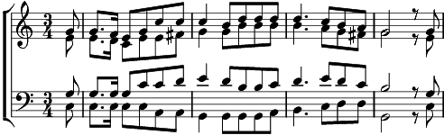

1. Du gabst, o Herr, mir Sein und Leben und deiner Lehre himmlisch Licht.
Was kann dafür ich Staub dir geben? Nur danken kann ich, mehr doch nicht,
nur danken kann ich, mehr doch nicht.
2. Wohl mir! Du willst für deine Liebe ja nichts als wieder Lieb allein;
und Liebe, dankerfüllte Liebe, soll meines Lebens Wonne sein,
soll meines Lebens Wonne sein.
3. Mich selbst, o Herr, mein Tun und Denken und Leid und Freude opfr' ich dir;
Herr, nimm durch deines Sohnes Opfer dies Herzensopfer auch von mir,
dies Herzensopfer auch von mir.